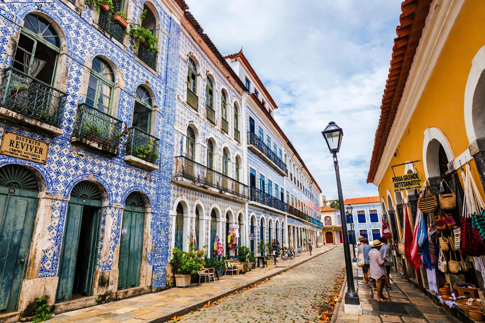

São Luís, Maranhão
São Luís is the capital of the Brazilian state of Maranhão, on São Luís Island in the Atlantic. Founded by the French in 1612, it is the only Brazilian state capital established by France. Its historic centre, covered in Portuguese azulejo tiles, is a UNESCO World Heritage Site, and the city is famous for its June Bumba Meu Boi festival and reggae culture.
| Country | Brazil |
|---|---|
| State | Maranhão |
| Founded | 8 September 1612 |
| Population | about 1.1 million |
| UNESCO | Historic Centre inscribed 1997 |

History
The French under Daniel de la Touche founded Saint-Louis in 1612 during the short-lived Equinoctial France colony. The Portuguese expelled them in 1615, and the city later came under Dutch occupation (1641–1644) before returning to Portuguese rule. It prospered on cotton and sugar produced by enslaved labour in the 18th and 19th centuries.
Culture
Bumba Meu Boi, a June folk festival blending African, Indigenous and Portuguese traditions, is recognised by UNESCO as Intangible Cultural Heritage. São Luís is also called the "Brazilian capital of reggae". The island has some of Brazil's largest tidal ranges.
Economy
The Itaqui port and alumina/aluminium operations anchor the economy, alongside tourism and services.